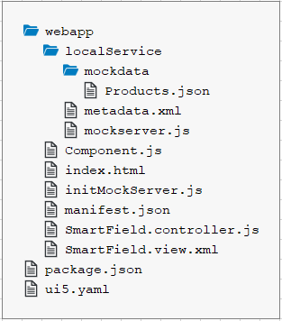

You have already gone through the following tutorials:
In addition, you need some background knowledge about OData and annotations that you can find here: http://www.sap.com/protocols/SAPData.
The smart controls require a default OData model, and named models are not supported.
For each step we will create the following files:
In some steps, additional files are needed. They will be
explained in those steps. Since many of these files are almost identical from step to step, we show their content here but only
briefly point to interesting points in these files if necessary. Please refer to the Walkthrough tutorial for
further details on the general setup and the content of the outer Component.js file (the top-level file on the same
level as the webapp folder) in which we define that the index.html will be shown in an iFrame.
Open a terminal and install UI5 Tooling globally on your machine by executing the following command:
npm install --global @ui5/cli
Create a new file called package.json which will enable you to execute commands and consume packages from
the npm registry via the npm command line
interface. Enter the following content:
package.json (New)
{
"name": "ui5.smartcontrols",
"version": "1.0.0",
"description": "The smart controls tutorial",
"scripts": {
"start": "ui5 serve -o index.html"
}
}
Create a new folder named webapp in the app root folder. It will contain all the sources that become
available in the browser later. We'll refer to this folder as the "webapp folder".
Create a new HTML file named index.html in your webapp folder and enter the following content:
webapp/index.html (New)
<!DOCTYPE html>
<html>
<head>
<meta charset="utf-8">
<meta name="viewport" content="width=device-width, initial-scale=1.0">
<title>Smart Controls Tutorial</title>
<script id="sap-ui-bootstrap"
src="resources/sap-ui-core.js"
data-sap-ui-resource-roots='{
"sap.ui.demo.smartControls": "./"
}'
data-sap-ui-on-init="module:sap/ui/demo/smartControls/initMockServer"
data-sap-ui-compat-version="edge"
data-sap-ui-async="true"
data-sap-ui-frame-options="trusted">
</script>
</head>
<body class="sapUiBody">
<div data-sap-ui-component data-name="sap.ui.demo.smartControls" data-id="container" data-settings='{"id" : "smartControls"}'></div>
</body>
</html>In this index.html, you will recognize that we reference the library sap.ui.comp, since
this is the main library for the smart controls. This index.html file references the
Component.js (through the name: "sap.ui.demo.smartControls") which always looks like this:
webapp/Component.js (New)
sap.ui.define([
"sap/ui/core/UIComponent"
], function(UIComponent) {
"use strict";
return UIComponent.extend("sap.ui.demo.smartControls.Component", {
metadata: {
manifest: "json"
}
});
});
In the Component.js file, we refer to the manifest.json file:
webapp/manifest.json (New)
{
"_version": "1.8.0",
"sap.app": {
"id": "sap.ui.demo.smartControls",
"type": "application",
"title": "SAPUI5 Smart Controls",
"description": "A simple app that explains the most important concepts of smart controls in SAPUI5",
"applicationVersion": {
"version": "1.0.0"
},
"dataSources": {
"mainService": {
"uri": "/here/goes/your/serviceUrl/",
"type": "OData",
"settings": {
"odataVersion": "2.0",
"localUri": "localService/metadata.xml"
}
}
}
},
"sap.ui": {
"technology": "UI5"
},
"sap.ui5": {
"rootView": {
"viewName": "sap.ui.demo.smartControls.SmartField",
"type": "XML",
"async": true
},
"dependencies": {
"minUI5Version": "1.30",
"libs": {
"sap.m": {},
"sap.ui.comp": {},
"sap.ui.layout": {}
}
},
"models": {
"": {
"dataSource": "mainService",
"settings": {
"defaultBindingMode": "TwoWay"
}
}
}
}
}In the manifest.json file we define the rootView and also the model of the application.
Please note that the TwoWay binding mode ensures that an input validation is done automatically based on
the metadata.
mockserver.js where we define a mock server handling the server
requests.webapp/localService/mockserver.js (New)
sap.ui.define([
"sap/ui/core/util/MockServer"
], function(MockServer) {
"use strict";
return {
init: function() {
// mock the service call from manifest.json
var oMockServer = new MockServer({
rootUri: "/sap/opu/odata/sap/EPM_REF_APPS_PROD_MAN_SRV/"
});
// configure
MockServer.config({
autoRespond: true,
autoRespondAfter: 500
});
// simulate
var sPath = sap.ui.require.toUrl("sap/ui/demo/smartControls/localService");
oMockServer.simulate(sPath + "/metadata.xml", {
sMockdataBaseUrl: sPath + "/mockdata",
bGenerateMissingMockData: true
});
// start
oMockServer.start();
}
};
});initMockServer.js. In this file we require the
mockserver.js module and start the mock server.webapp/initMockServer.js (New)
sap.ui.define([
"sap/ui/demo/smartControls/localService/mockserver"
], function (mockserver) {
"use strict";
// initialize the mock server
mockserver.init();
// initialize the embedded component on the HTML page
sap.ui.require(["sap/ui/core/ComponentSupport"]);
});Open a terminal in the app root folder and execute npm i -D @ui5/cli to install UI5 Tooling.
Execute ui5 init in the app root folder.
Execute ui5 use SAPUI5
Execute ui5 add sap.m sap.ui.core sap.ui.comp sap.ui.layout themelib_sap_horizon
Execute npm start to start the web server and to open a new browser window hosting your newly created
index.html.
You might notice the rather flat setup of the files that is different from the setup propagated in the
Walkthrough tutorial where the Model-View-Controller paradigm is reflected in the
folder structure. We have chosen the flat setup for this tutorial since our examples all have exactly one single file for
the view and one single file for the controller. Additional folders would add a complexity that we would like to avoid.